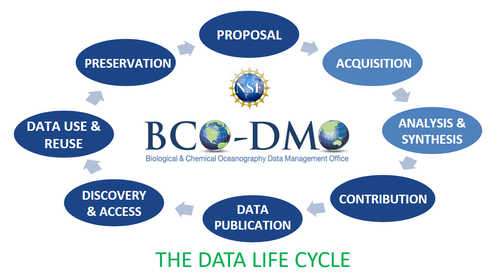

Open Data¶
The inherent value that data hold to the research process cannot be overstated, and existing data hold great potential to accelerate scientific discovery through reuse once shared.
The concept of open data, data that are publicly and freely discoverable, accessible, and reusable, has been steadily gaining momentum in the scientific community: “Open data is like a renewable energy source: it can be reused without diminishing its original value, and reuse creates new value.” (Science et al., 2017).
Realizing the value of open data within the scientific research landscape, several stakeholders from funders to journal publishers, are driving change in the culture of data sharing (Mayernik, 2012, Costas et al., 2013; NSF17-037, 2017; Holdren, 2013). With this shift, many digital data repositories have come online to provide data management services that meet stakeholder needs for data discovery and access.
However, in order for data to be reused efficiently and effectively, they must also be well managed and stewarded. Here, domain-specific repositories add great value to their community’s research data by bringing subject matter expertise to the curation process (Lenhert, 2015; ICPSR, 2013).
Data Life Cycle¶
Curating and providing open access to research data is a collaborative process. This process may be thought of as a life cycles with data passing through various phases. Each phase has its own associated actores, roles and critical activities. Good data management practices are necessary for all phases, from proposal to preservation.
{kind=link}
FAIR principles¶
BCO-DMO aligns its data stewardship philosophy with the F.A.I.R. Data Principles (Wilkinson et al, 2016), which have gained significant attention within the data management landscape over the recent years. These principles outline tangible practices data providers can employ to promote easier sharing and ultimate reuse of data by both machines and humans, thereby making them “Findable, Accessible, Interoperable and Reusable”.
Wilkinson, M. D., Dumontier, M., Aalbersberg, I. J., Appleton, G., Axton, M., Baak, A., Blomberg, N., Boiten, J. W., da Silva Santos, L. B., Bourne, P. E., Bouwman, J., Brookes, A. J., Clark, T., Crosas, M., Dillo, I., Dumon, O., Edmunds, S., Evelo, C. T., Finkers, R., Gonzalez-Beltran, A., Gray, A. J., Groth, P., Goble, C., Grethe, J. S., Heringa, J., ‘t Hoen, P. A., Hooft, R., Kuhn, T., Kok, R., Kok, J., Lusher, S. J., Martone, M. E., Mons, A., Packer, A. L., Persson, B., Rocca-Serra, P., Roos, M., van Schaik, R., Sansone, S. A., Schultes, E., Sengstag, T., Slater, T., Strawn, G., Swertz, M. A., Thompson, M., van der Lei, J., van Mulligen, E., Velterop, J., Waagmeester, A., Wittenburg, P., Wolstencroft, K., Zhao, J., … Mons, B. (2016). The FAIR Guiding Principles for scientific data management and stewardship. Scientific data, 3, 160018. doi:10.1038/sdata.2016.18
Unique Identifiers¶
ORCID, DOI (handle) and CITATIONS https://guides.lib.berkeley.edu/c.php?g=4385&p=3078010
Publishing data¶
- BCO-DMO publishes data and metadata, fostering data discoverability, access, reuse and attribution.
- A DOI is generated for every dataset and will be assigned for all submissions. All datasets must be final and validated before a DOI is assigned.
- We provide a recommended citation, so that users can proberly cite each dataset.
- All datasets available at BCO-DMO are licensed under a Creative Commons Attribution 4.0 International License, ensuring that each data contributor will receive proper credit.
- Every DOI is minted for archive by the WHOI Open Access Server (WHOAS), and resolve to WHOAS landing pages
Preserving data¶
Preservation marks a maturity level that allows to begin the data life cycle again in new research endeavors. BCO-DMO serves as a domain specific, intermediate data repository, and as such does not function as a long-term archive for data preservation. BCO-DMO provides data management support throughout the period of performance of a project award, which prepares project output for reuse and reanalysis by the community. Once a project data and metadata are published online at BCO-CMO, they are then submitted to an appropriate national data center for long-term preservation (e.g. the National Centers for Environmental Information).